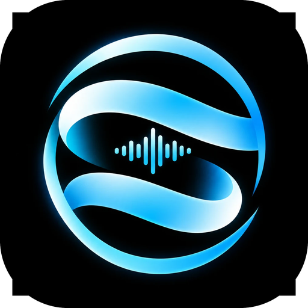
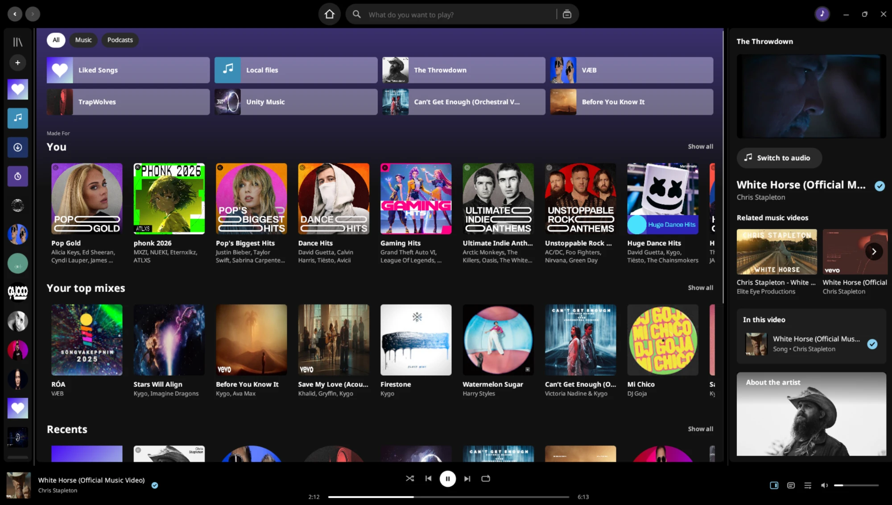
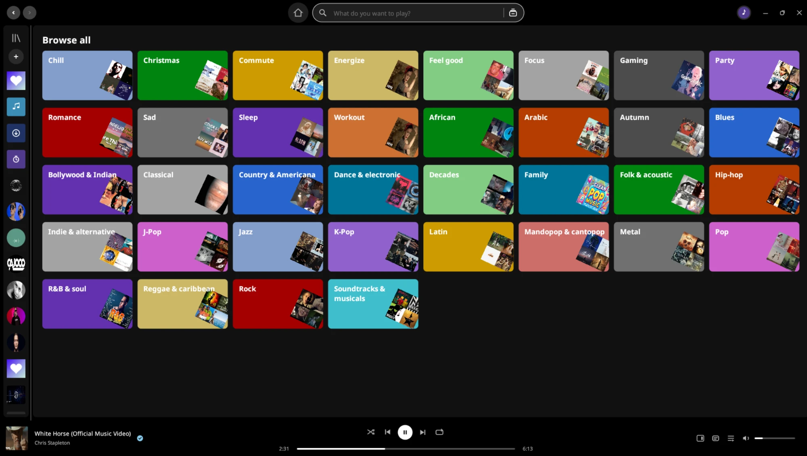
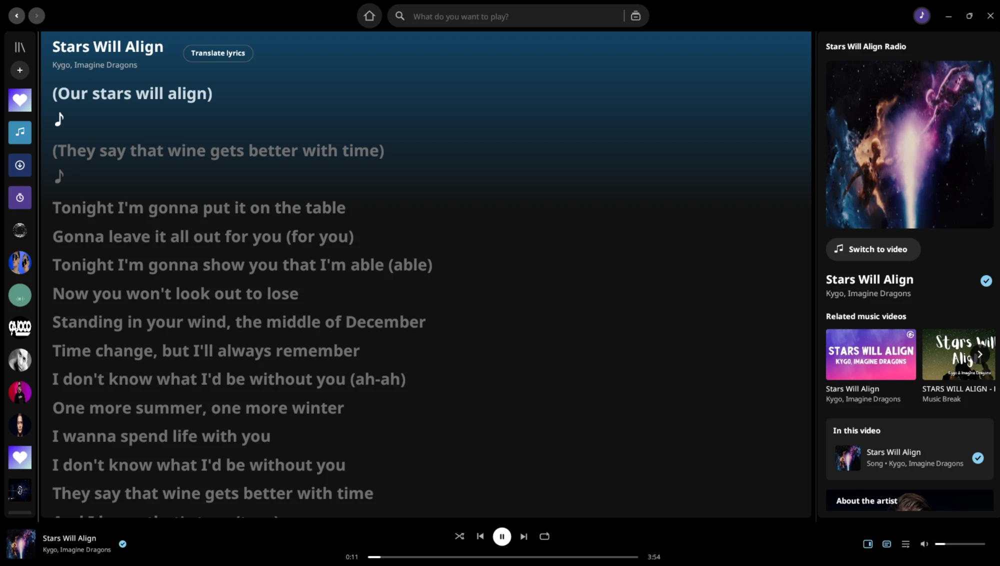

Senthym is a Spotify-style music player written in pure Rust. Search and stream from YouTube Music, Deezer and SoundCloud with no ads, no subscription and no API keys. Play your own files, read synced lyrics and watch official music videos up to 1080p.

Everything you expect from a modern music app, with the interface you already know and nothing between you and your music.
YouTube Music is already set up. Deezer and SoundCloud are searched alongside it. No account and no API key needed; Spotify can be added optionally with your own key.
Suggestions as you type, recent searches with covers, Browse all with genre and mood tiles, and each song listed once even when three sources have it.
Senthym gets songs ready before you press play: what you hover over, what is on screen and what plays next. Queue, shuffle, repeat, history and crossfade included.
Official videos, or the artist's live, acoustic and sessions films when there is no studio video. Every video is checked against the song. Switch to audio with one click.
Auto by default, or pick 1080p down to 240p. Changes land in a fraction of a second, with mini player, full screen and related videos over the picture.
Line-by-line lyrics that follow the song, translated into your language, and kept in time even when a video opens with a scene before the music.
Create playlists with a name, description and cover picture. Liked Songs, followed artists and saved albums live together, with a rail or a full grid.
A song stays in the list, greyed out, and is skipped when it is time to play. Works in every playlist, Liked Songs included, with an Undo.
When your queue ends, Senthym blends the radios around what you actually chose, adapts within a couple of songs and rests artists you skip.
When a song can't be fetched, Senthym tries SoundCloud and another upload at once instead of skipping it, and tells you where it came from.
Play music from your computer next to the online library, download songs to keep them offline, and sign in with Google to bring in your own library.
Settings → Updates checks the releases page, downloads the right package, verifies it, installs it and reopens Senthym with your library and sign-in kept.
A library on the left, the song bar at the bottom and the Now Playing panel on the right. If you have used a music app before, you already know where everything is.

Browse all, with genre and mood tiles

Synced lyrics with translation
Senthym comes already set up. Open it, type a song and press play. There is nothing to configure, no account to create and no key to enter.
Results from YouTube Music, Deezer and SoundCloud appear together, merged so each song shows once. Remixes, live versions and covers stay separate.
Senthym's own streaming engine fetches the song and plays it through its audio player, so crossfade, volume, seeking and lyrics work the same for every source.
If the song has an official video, the picture plays in sync with the sound. Switch between video and audio at any moment, at the same position.
When the queue ends, autoplay blends songs from what you chose. If a source fails, another one takes over.
Senthym is written in Rust and draws its own interface: no Electron, no web view. It starts quickly, stays small and keeps the music steady even while a 1080p video is playing.
The Windows program is a single 13 MB file and the .deb is about 5 MB. The AppImage and Flatpak are bigger because they carry ffmpeg inside.
About 140 MB when idle and about 155 MB while playing a song, measured on Linux. Pictures are capped at about 450 MB and the song cache at 1 GB.
Audio has its own thread, and the video decoder runs at a lower priority, so a heavy picture can't make the music stutter.
Songs are prepared while you hover over them, scroll past them and queue them, so the next one starts at once and searches open instantly.
Every video quality is looked up in one go, so switching between 240p and 1080p takes a fraction of a second (0.1 to 0.4 s in our tests) and never freezes the picture.
If a source refuses a song, Senthym tries SoundCloud and another upload at the same time and plays the first that works.
Senthym was designed and tested on Linux (Ubuntu 26.04.1 LTS). Windows and macOS work too but get less testing. Every release lists what is done, what was fixed and what is not.
DOWNLOAD
Prebuilt packages with ffmpeg included where it is needed. Free and open source under the GPL.
AppImage, .deb, .rpm and Flatpak, for x86_64 and ARM64. The AppImage needs no installation and has ffmpeg inside.
$ chmod +x Senthym-linux-*.AppImage $ ./Senthym-linux-*.AppImage
One universal app for Apple silicon and Intel, in a disk image. It is not notarized: clear the quarantine before the first launch.
$ xattr -dr com.apple.quarantine \
/Applications/Senthym.appWindows 10 and 11. One file: download it and run it. SmartScreen warns because the file is not code signed. The first start fetches the video decoder by itself.
Rust stable, ffmpeg on your PATH (Linux) and working sound output. The README has the full guide.
$ cd app $ cargo build --release
OPEN SOURCE
Issues and pull requests are welcome. The code layout is documented, every release lists what changed and what is not done yet, and CI builds every package you can download here.